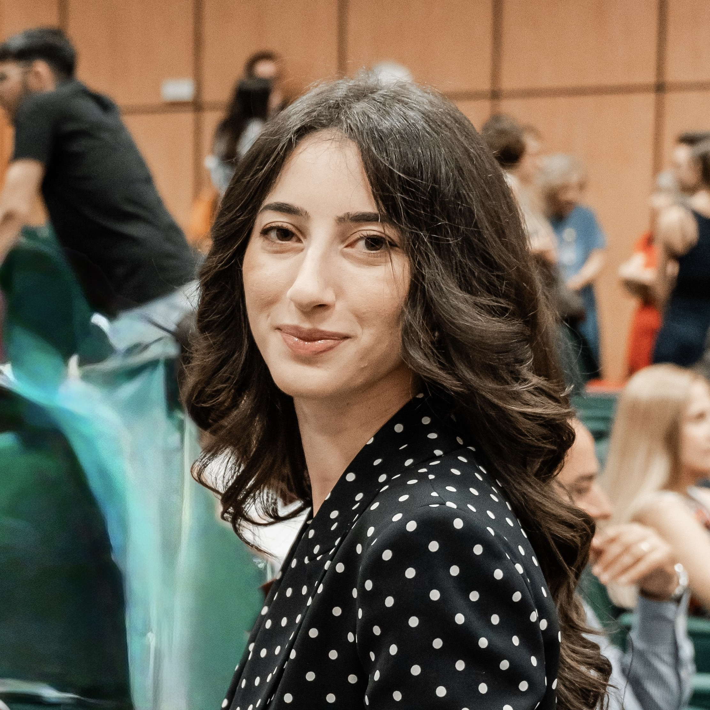
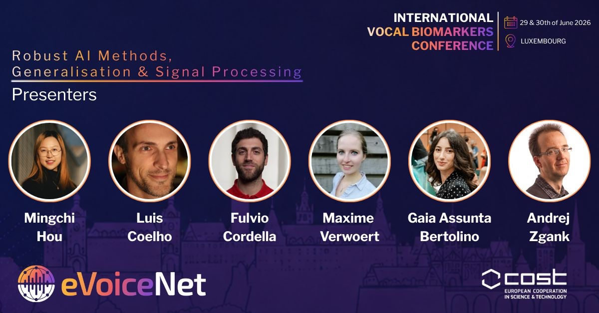
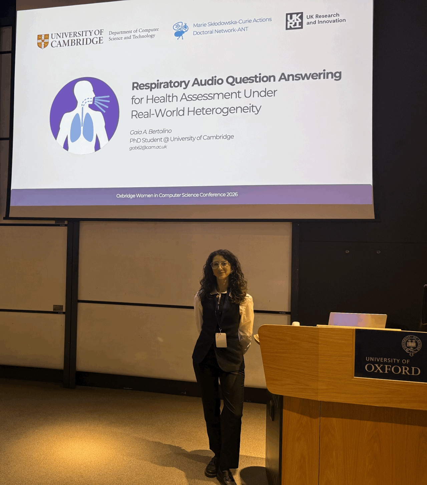

About
I am a Marie Skłodowska-Curie PhD student at the University of Cambridge under the supervision of Prof. Cecilia Mascolo, and co-supervised by Prof. Qing Wang (TU Delft) and Prof. Milan Petkovic (Philips, TU Eindhoven).
My research focuses on the trustworthiness of conversational AI systems for health assessment, leveraging vocal biomarkers to build uncertainty-aware and grounded models.
Beyond research, I play tennis for the Hughes Hall 2nd team 🎾, enjoy outdoor activities 🥾, I am passionate about languages and cultures 🌍🀄 and I co-founded a startup 🚀.

Gaia A. Bertolino
Research Assistant & PhD Student
Affiliations
- Marie Skłodowska-Curie Doctoral Fellow, MSCA ANT Doctoral Network on Embedded AI Systems & Applications
- Member, eVoiceNet COST Action European Network for Vocal Biomarkers in Healthcare (CA24128)
Education
- PhD in Computer ScienceUniversity of Cambridge · ongoing
- MSc in Computer Engineering Major in Artificial IntelligenceUniversity of Calabria, Italy · Research Internship at the University of Cambridge
- BSc in Computer EngineeringUniversity of Calabria, Italy · Industrial internship at Cap4Lab, Luxembourg
News
-
Activity Volunteered at ACM MobiSys 2026
Publications
-
IVBC - International Vocal Biomarkers Conference
Benchmarking Heterogeneous Audio Biomarkers for Respiratory Health Question Answering
-
MobiUK - Eighth UK Mobile, Wearable and Ubiquitous Systems Research Symposium
Respiratory Audio Question Answering for Health Assessment Under Real-World Mobile Sensing Heterogeneity
-
Oxbridge Women in Computer Science Conference
Respiratory Audio Question Answering for Health Assessment Under Real-World Heterogeneity
-
arXiv preprint
RAMoEA-QA: Hierarchical Specialization for Robust Respiratory Audio Question Answering
-
arXiv preprint
RA-QA: Towards Respiratory Audio-based Health Question Answering
Talks
All talks ↗-
 MSCA ANT Network meeting
MSCA ANT Network meetingTowards Trustworthy Respiratory Audio Question Answering
-

Oral presentationIVBC 2026Benchmarking Heterogeneous Audio Biomarkers for Respiratory Health Question Answering
-
 Conference talkMobiUK 2026
Conference talkMobiUK 2026Respiratory Audio Question Answering for Health Assessment Under Real-World Heterogeneity
-

Oral presentationOxbridge WiCS 2026Respiratory audio question answering for health assessment
Teaching
- Machine Learning & Real World Data Supervisor · Lent 2026/27 · 2 students from Corpus Christi College
- Object-Oriented Programming Supervisor · Michaelmas 2026/27 · 6 students from King's College
- Machine Learning & Real World Data Supervisor · Lent 2025/26 · 8 students from Corpus Christi, Clare, Selwyn and Emmanuel Colleges
Mentorship
- AIM: PhD programme Mentor · University of Cambridge · 2026
- Lead The Future Mentorship Mentor · Lead The Future (LTF), Italy · 2026
- YEP, We Can! — Young Women Empowerment Program Mentor · Fondazione Ortygia · 2024